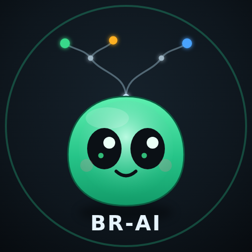

Documentação do BR-AI
Crie, teste e gere a IA do seu homúnculo de Ragnarok Online — direto no navegador, sem instalar nada.
O BR-AI é uma IA de homúnculos construída sobre uma árvore de comportamento. Você monta a árvore arrastando blocos no editor, testa o comportamento contra um mundo de mentira no simulador, e quando estiver bom gera o pacote Lua para colocar no cliente do jogo. A mesma árvore que você vê rodando no simulador é a que roda no RO — nada muda no caminho.
Esta documentação cobre a versão estática (a que abre no navegador). Você não precisa de Node, Electron, terminal nem instalar dependências: tudo roda na própria página.
São duas páginas: o Editor (a página inicial, index.html) e o Simulador (sim.html). No topo de cada uma há um link para a outra e para esta documentação. Esta doc abre sempre em uma nova aba, então você pode consultá-la sem perder seu trabalho.
Do zero ao jogo em 5 passos
- Abra o Editor e clique em Padrão para começar de uma árvore que já funciona (ou monte do zero).
- Escolha o homúnculo no seletor de contexto — isso define quais skills aparecem.
- Ajuste a árvore: adicione ramos, troque skills, reordene prioridades, desative o que não quer testar.
- Clique em ▶ Simular para abrir o Simulador com a sua árvore, pinte um cenário (dono, monstros) e veja o homúnculo agir, com a árvore colorida ao vivo.
- Volte, refine e clique em Gerar Lua para baixar o pacote pronto para a pasta da IA do RO.
Por onde seguir
Primeiros passos
As duas telas, como navegar entre elas e o modelo carregar = upload / salvar = download da versão estática.
Migrar AzzyAI
Envie seu USER_AI.zip, confira o de→para e abra a árvore já montada no editor.
Guia do Editor
Montar a árvore: nós, arrastar/reparentar, inspetor, skills, desativar nós, validação e gerar o Lua.
Guia do Simulador
Rodar a árvore num mundo falso: controle de tempo, mapa, blackboard, árvore colorida ao vivo e cenários.
Referência de nós
O catálogo completo: composites, decorators, condições e ações, com parâmetros e semântica.
Monstros & skills
Reagir ao monstro-alvo, escolher skills por homúnculo e configurar os combos da Eleanor.
Conceitos
O que é uma árvore de comportamento, por que ela é só decisão e como ler os status dos nós.
Atalhos rápidos de teclado
| Onde | Atalho | O que faz |
|---|---|---|
| Editor | D | Ativa / desativa o nó selecionado (e seus filhos) |
| Editor | Ctrl+Z / Ctrl+Y | Desfazer / refazer |
| Editor | Ctrl+D | Duplicar o nó selecionado |
| Simulador | Espaço | Play / pause |
| Simulador | ← / → | Voltar / avançar 1 frame |
| Simulador | Home / End | Primeiro frame / ir ao vivo |